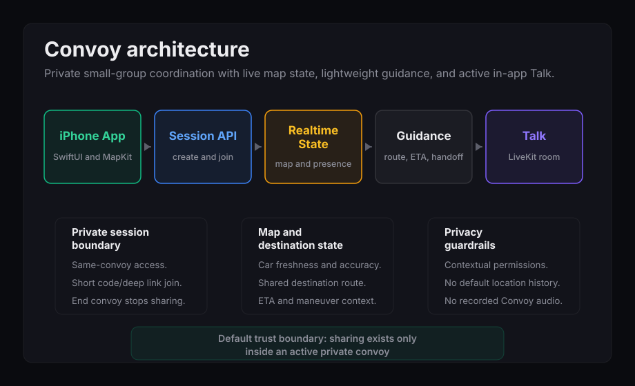
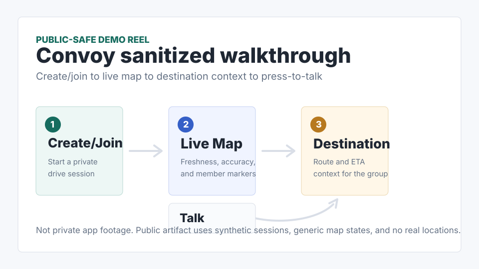

20-second summary
Convoy proves realtime mobile range: private group sessions, shared map state, route and ETA context, and press-and-hold Talk for people driving together without turning the app into public tracking.
Active product
realtime iOS group navigation app
Convoy is a native iPhone MVP for small private groups that deliberately start a drive together. The product line is "Stay close, even apart": create a convoy, join by code, share map and destination context, use active in-app Talk, and end the convoy so sharing stops.

Convoy proves realtime mobile range: private group sessions, shared map state, route and ETA context, and press-and-hold Talk for people driving together without turning the app into public tracking.
The system combines a SwiftUI iPhone app, MapKit/Core Location, Supabase session and realtime boundaries, LiveKit voice rooms, privacy-first permission timing, and explicit runtime validation gates.
Source private during active development; technical walkthrough available on request.
Case Study
Friends driving separately often coordinate through scattered texts, calls, screenshots, and navigation apps. Convoy narrows the problem: a private group deliberately starts a session, shares only the state needed for that drive, and has one obvious way to stop sharing.
Convoy is structured as a thin native iOS client over managed realtime services. SwiftUI owns the app shell and convoy UI, MapKit/Core Location owns map and location behavior, Supabase owns auth, session state, RLS-protected membership, Edge Functions, Broadcast, and Presence, and LiveKit owns active convoy voice rooms.
The public-safe model is category-level: convoy sessions, membership, join codes, same-convoy access boundaries, latest member state, optional shared destination, route/ETA context, realtime Broadcast and Presence, user display names, nicknames, car colors, LiveKit room identity, short-lived token issuance, and end-convoy stop-sharing behavior. Raw endpoint specs, table definitions, policies, and source code stay private.
I shaped the MVP around a deliberately started private convoy, built the deterministic prototype loop, modeled create/join/session state, mapped member identity to car markers, and kept privacy/app review constraints visible while service-backed runtime paths were staged.
Verification includes prototype journey checks, static milestone scripts, Swift/XCTest source coverage, RLS test outlines, copy and privacy reviews, and explicit blockers for Mac/Xcode, Supabase, and LiveKit runtime validation.
Public proof comes from architecture diagrams, state/API category summaries, prototype walkthrough notes, verification summaries, and interview walkthroughs rather than public source code.

Media
This sanitized walkthrough is not private app footage. It shows the public product loop: create/join, live map state, destination/route context, press-to-talk, and end-convoy cleanup.
The public reel uses synthetic sessions and generic map states only; real locations, identity data, raw source, endpoint details, and policies stay private.